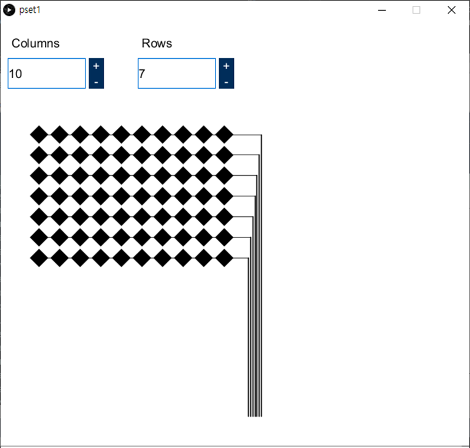
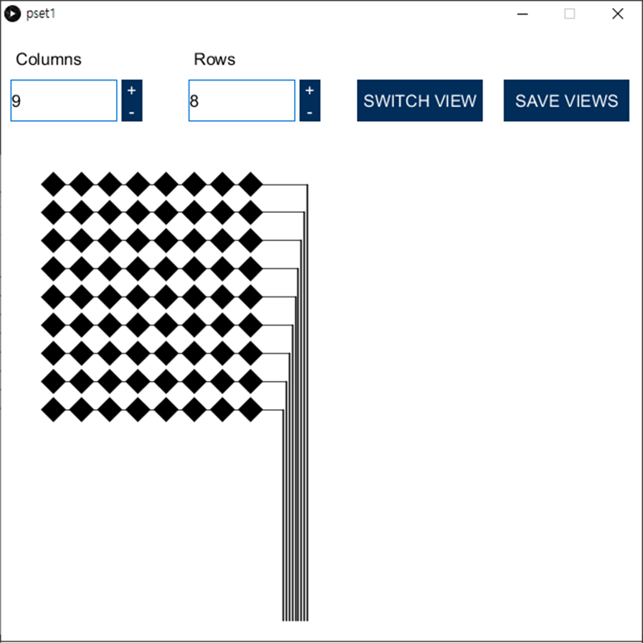
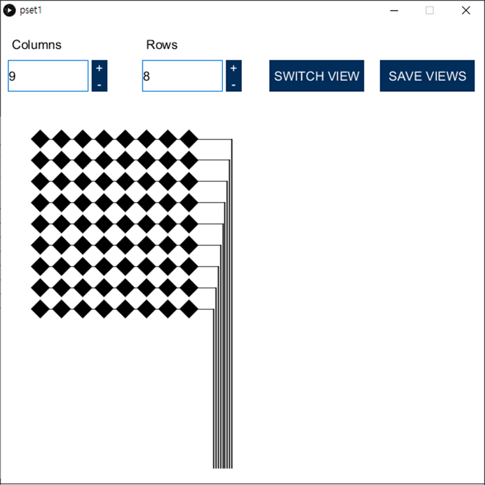

6.810 Engineering Interactive Technologies (fall 2021)
Pset1: User Interface for Multi-Touch Pad Fabrication Files
In this problem set, you will create a user interface that will automatically generate the fabrication files for making multi-touch pads of different dimensions (e.g., 8x4 electrodes or 4x6 electrodes). A user will be able to input parameters, such as the number of electrodes for the rows and columns of the multi-touch pad and then automatically receive the matching fabrication files, i.e. 2D drawings of the electrode layouts in .pdf file format that the user can then send to their 2D printer for conductive inkjet printing. You will implement this interface in Processing.
For the multi-touch pad, we will use the classical two-layered diamond pattern that is commonly used for mutual-capacitive touch sensing.
As explained in lecture, this means that your multi-touch pad has two electrode layers, printed separately: One layer contains the rows, the other contains the columns.
Each row/column consists of multiple electrodes and has a single wire at the end.
Once both sheets are printed, you will layer them on top of each other to build the multi-touch pad.
Skeleton Code:
Start by downloading the skeleton code for the PSet1 here.
Steps:
- Create input fields for the number of electrodes
- Draw the electrodes and wires
- Create a preview function for looking at the rows/columns individually
- Create an export function to save the fabrication files as a .pdf
- Check that your drawing has the correct size when printed out
- Adjust the Multi-Touch Pad dimensions using DPI scale factor
- Export the Multi-touch Pad
- Final check before you submit
In the user interface, create two input fields that allow the user to set the desired number of electrodes for the 'rows' and 'columns' (default value should be 10 electrodes for both). A simple trick to creating UI elements in Processing is to first draw a rectangle; then, you can check if a mouse-click event occured over the rectangle to create a button, or you can overlay a text label on the rectangle to display the current value. Refer to the Rect and Text and Fonts tutorials for more information. Make sure the user cannot enter negative values. The upper bound for the number of electrodes that fit on one sheet is 12 electrodes and thus the user should not be allowed to exceed this number.
In the skeleton code, put your code for creating the input fields in the createUI() function:
void createUI() {
}
(2) Drawing the Electrodes and Wires

Drawing one electrode: Next, draw one electrode. An electrode is a rectangle rotated by 45 degrees.
Use the variable electrodeSize from the pset1_header.pde file for the size of the electrode.
float electrodeSize = 6*mm; // A side length of an electrode: 6 mm in pixels
In the skeleton code, put your code for drawing one electrode in the drawSingleElectrode() function:
void drawSingleElectrode(float _x, float _y, float _sideLength){
}
Drawing multiple electrodes: Once you can draw one electrode, create a second electrode at an offset either horizontally to start forming a row, or vertically to start forming a column.
Use the variable electrodeOffset from the pset1_header.pde file for the offset.
float electrodeOffset = 1*mm; // An offset between electrodes: 1 mm in pixels
In the skeleton code, put your code for drawing multiple electrodes in the drawElectrodes() function:
void drawElectrodes(int _row, int _col, int _init_x, int _init_y) {
// (call 2a) Call drawSingleElectrode() function iteratvily to draw multiple electrodes
drawSingleElectrode(_init_x, _init_y, electrodeSize); // "electrodeSize" is defined in the pset1_header file.
}
Translate UI input into electrode count: Next, translate the UI input into the correct number of eletrodes generated by your functions, i.e. when the user sets the number of electrodes for the columns to be '10' and the rows to be '6', your program should draw a grid with 10 electrodes vertically and 6 electrodes horizontally.
Drawing Wires: Next, draw the wires that connect the electrodes.
Use the variables wireThicknessInside and wireThicknessOutside from the pset1_header.pde file for the thickness of the wires.
float wireThicknessInside = 0.3*mm; // the thickness of the wires inside of multi-touch pad that connect electrodes, in mm (default value: 0.3mm)
float wireThicknessOutside = 0.5*mm; // the thickness of the wires outside of multi-touch pad that connect to FPC connectors, in mm (default value: 0.5mm)
At the end of each row/column, the wire is routed to the side to connect to an FPC connector.
Use the variable, spacing, in the pset1_header.pde file for the spacing on the FPC connector.
float spacing = 0.5*mm; // the spacing of wires on the FPC connector in mm
In the skeleton code, put your code for drawing wires in the drawWires() function:
void drawWires(float _spacing, float _thicknessInside, float _thicknessOutside) {
}
(3) Preview Function to Look at Each Layer Individually
Top and Bottom Layer of Multi-touch Pad: The multi-touch pad consists of two layers; a bottom layer and a top layer. If the bottom layer has x rows and y columns of electrodes, the top layer should have y rows and x columns of electrodes. Thus you can draw two layers at once by swapping the row and column variables that the user entered.
Create 'Switch Views' Button: Create a button that switches between the design's top and bottom layer view. That way, clicking the button should either show the top layer or the bottom layer so the layers can be looked at individually.
In the skeleton code, put your code for switching views between the design's top and bottom layer in the switchView() function:
public void switchView() {
}
(4) Export Function to Save Fabrication Files
Create 'Save Views' Button: Add a button that, when clicked, saves the generated electrode layers into two .pdf files. The bottom-electrodes.pdf should contain the rows, and the top-electrodes.pdf should contain the columns.
 

In the skeleton code, put your code for saving fabrication files in the saveViews() function:
public void saveViews() {
}
(5) Finding Your DPI to Convert Pixel to mm
Our multi-touch pad design is printed in millimeters but Processing handles everything in pixels. How do we know the number of pixels in one millimeter? Without this conversion factor, we won't know how many pixels we should use for the electrodes lengths, wire thicknesses, and the spacing/offsets between these components. The conversion factor from pixel to mm is different for each operating system. We will thus do a test to figure this out for your specific OS.
Determing DPI: Create a new document in Illustrator. Set the drawing unit to 'millimeters' (File -> Document Setup -> Units 'Milimeters').
Then draw an 1 mm line with the pen tool. You can set line width to 1 mm and height to 0 mm in the property window.
Change the drawing unit to 'pixels' (File -> Document Setup -> Units 'Pixels'). Then select the line to see the line length in the property panel in pixels.
Now you know that 1 mm is the same as 2.835 pixels.
Confirming dpi: To confirm that this is indeed the correct DPI for your OS, go back to Processing, and use the code below to draw a line of 2.835 pixels, which should correspond to 1mm.
void drawLine() {
background(255);
int offset = 100;
float line_length = 2.835;
line(offset,offset,offset+line_length,offset);
stroke(204, 102, 0);
}
Export the line using your implemented .pdf export function, and open it in Adobe Illustrator. Don't forget to set the document units to 'milimeters'. Then select the line. Do you now see 1 mm? If yes, you can now be confident that 1mm is 2.835 pixels for your OS.

(6) Adjust Multi-Touch Pad Dimensions Using DPI Scale Factor
Now that you have your DPI scale factor, it's time to update all the multi-touch elements to have the right size.
Applying Scaling Factor to Electrodes: So, if our electrodes are 6mm in size, they will be around 6 * 2.835 = 17.01 pixels wide.
You need to find pixels per mm of your system, which can be different from 2.835.
(7) Export Multi-touch Pad
When you are done with your code, export a multi-touch pad design of 8x9 electrodes from your user interface.
(8) Final Check before you Submit
Before you submit files, please check the following:
Two PDF Files: You should have 2 pdf files: bottom-electrodes.pdf and top-electrodes.pdf.
Check Alignment of both Top/Bottom Layers: Open both PDF files in Illustrator and overlay them on top of each other to check that the columns and rows of the multi-touch pad are correctly positioned.
Check Dimensions: Open each .pdf file in Illustrator and measure the length of each element to confirm that it has the right size. Below is a short video of how to measure an element in Illustrator.
- edge length of the electrodes: 6mm
- spacing between adjacent electrodes: 1mm
- spacing between non-connected electrodes: 1mm
- thickness of wires inside of multi-touch pad that connect electrodes: 0.3mm the image above from DuoSkin is confusing, it shows this for an outside wire
- thickness of the wires outside of multi-touch pad that connect to FPC connectors: 0.5mm
- spacing of wires on the FPC connector: 0.5mm
Upload your Code and Design Files
For grading, please upload the following to your google drive student folder:
- the .pde files of your Processing program
- the two .pdf files for a multi-touch pad design of 8x9 electrodes, exported from your processing program
Grading
We will give 20 pts in total:
- Does the Processing UI have input elements that correctly set the number of electrodes in the x-direction and the number of electrodes in the y-direction with appropriate default values? Does the Processing UI have lower and upper bounds for each input field?(5 pts)
- Is the electrode pattern on the screen is correct? Are lines going to the connector pad, and the connector pad itself correct? Are the predefined variables used for drawing electrodes and wires? (5 pts)
- Does the Processing UI export function export drawings of the correct dimensions onto two seperate .pdf files that are named correctly, and have the correct settings for conductive inkjet printing? Is the toggle function for showing/hiding layers implemented? (5 pts)
- Does the edge length of the electrodes, the spacing between adjacent electrodes, the spacing between non-connected electrodes, the thickness of the wires inside of multi-touch pad that connect electrodes, the thickness of the wires outside of multi-touch pad that connect to FPC connectors, and the spacing of wires on the FPC connector correctly set in the Processing code? (5 pts)